Beam Pipes
1_circular.gmad
A 0.2m section of circular beam pipe - nothing particularly interesting.
How to run:
bdsim --file=1_circular.gmad
{kind=link}
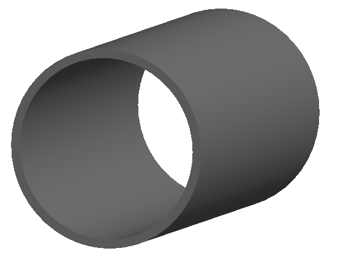
2_rectangular.gmad
A 0.2m section of rectangular beam pipe.
How to run:
bdsim --file=2_rectangular.gmad
{kind=link}
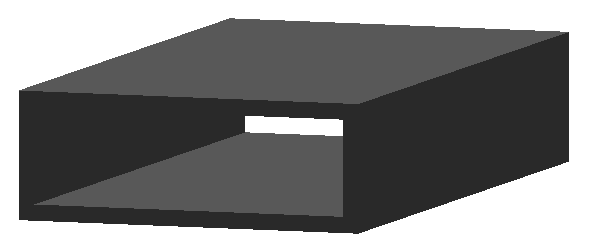
3_elliptical.gmad
A 0.2m section of elliptical beam pipe. The definition of the drift overrides
the default parameter of beampipeThickness here.
How to run:
bdsim --file=3_elliptical.gmad
{kind=link}
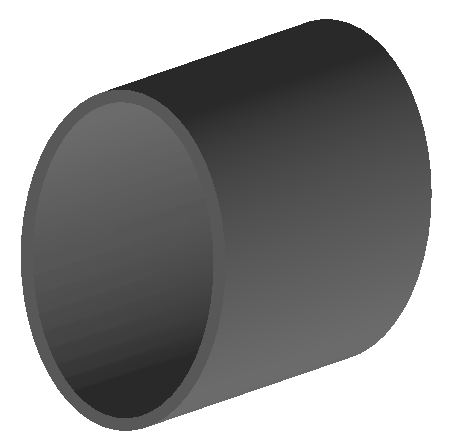
4_lhc.gmad
A 0.2m section of lhc-style beam pipe. The definition of the drift overrides
the default parameter of beampipeThickness here. Additionally, aper1,
in the definition of the drift d1 overrides the general (degenerate)
beampipeRadius option in options.gmad.
How to run:
bdsim --file=4_lhc.gmad
{kind=link}
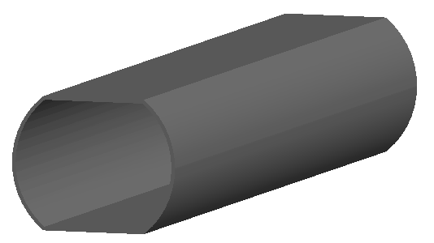
5_lhcdetailed.gmad
Similary to 4), a 0.2m section of lhc-style beam pipe but with the more detailed lhc aperture model.
How to run:
bdsim --file=5_lhcdetailed.gmad
{kind=link}
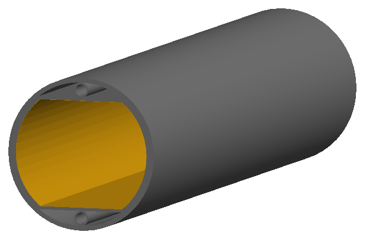
6_rectellipse.gmad
A 0.2m section of rectangular-ellipse beam pipe. This is composed of the intersection of a rectangle and an ellipse, unlike the lhc-style beam pipe that is the intersection of a rectangle with a circle.
How to run:
bdsim --file=5_lhcdetailed.gmad
{kind=link}
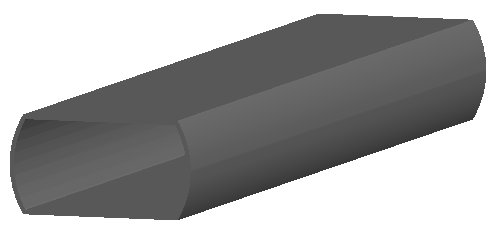
7_racetrack.gmad
A small section of beam pipe with a MADX racetrack aperture style. This is a rectangle with circularly rounded corners.
How to run:
bdsim --file=7_racetrack.gmad
{kind=link}
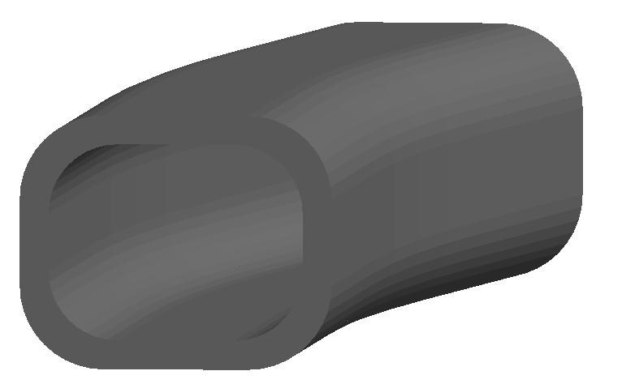
8_octagonal.gmad
A small section of beam pipe with an octagonal aperture style. This is a rectangle with flat cut corners.
How to run:
bdsim --file=8_octagonal.gmad
{kind=link}
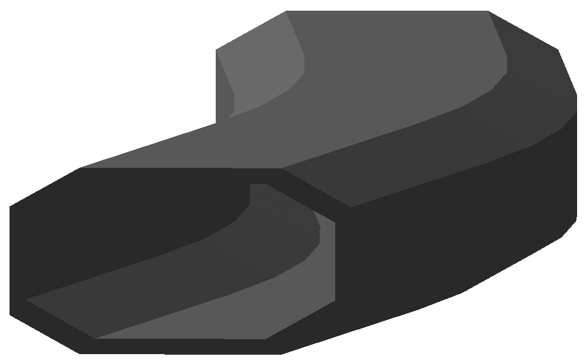
9_circularvacuum.gmad
Circular vacuum doesn’t make any beam pipe and the vacuum is by default invisible so there is nothing to visualise. However, this is useful for visualising the trajectories of the beam.
How to run:
bdsim --file=9_circularvacuum.gmad
10_clicpcl.gmad
A small section of CLIC post collision line beam pipe.
How to run:
bdsim --file=10_clicpcl.gmad
{kind=link}
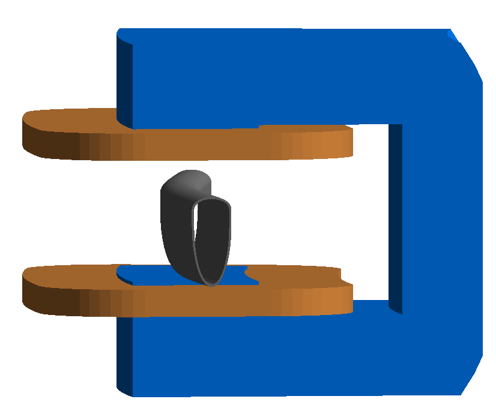
12_pointsfile.gmad
A custom beam pipe defined by 12_points.dat.
{kind=link}
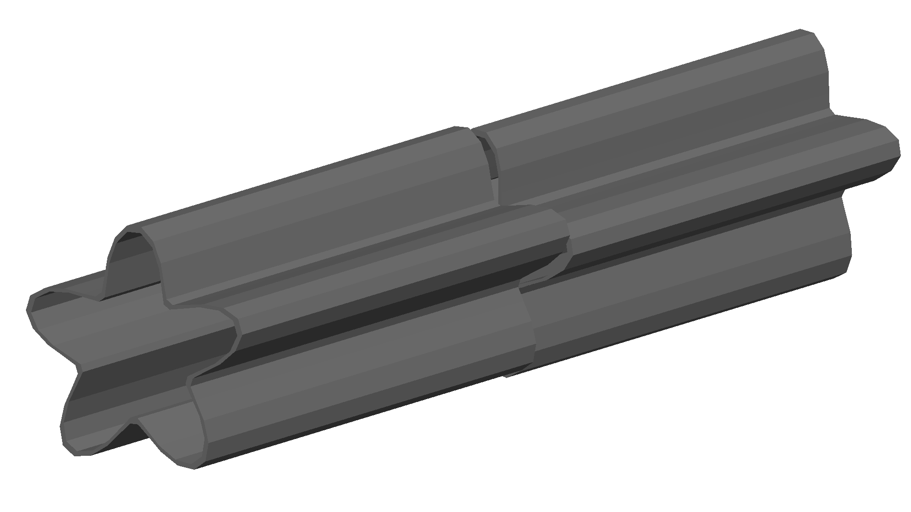
16_rhombus.gmad
A few diffrent rhombus shapes.
{kind=link}
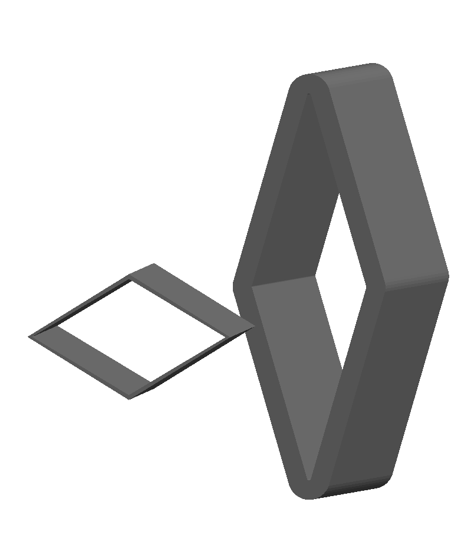